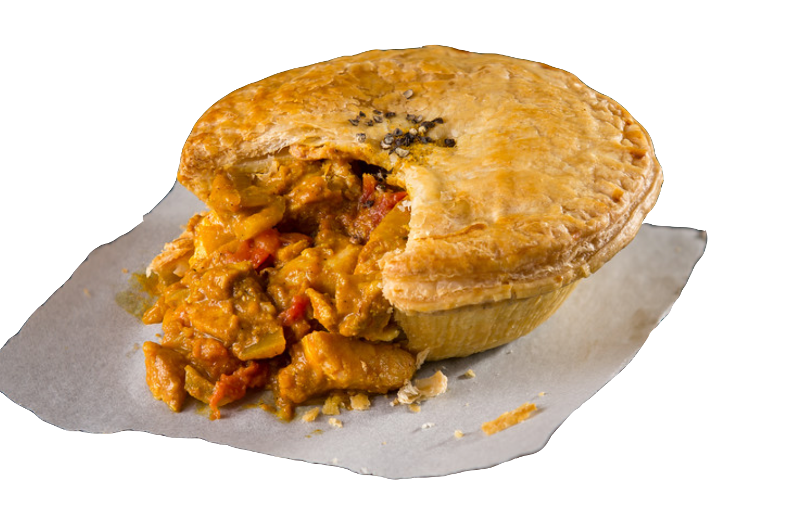

Chicken Pie
A delicious chicken pie made from scratch with carrots, peas, and celery in a pre-made crust. Add thyme and poultry seasoning for more flavor.
The ingredients:
- Chicken: Boneless, skinless chicken breasts (cut into cubes) are ideal for making classic chicken pot pie.
- Vegetables: This chicken pot pie recipe calls for the usual suspects: peas, carrots, onions, and celery. You could toss in some mushrooms or green peppers if you want to incorporate more veggies.
- Butter and Flour: The chicken pot pie filling starts with a roux made with butter and all-purpose flour.
- Seasonings: Achieve the perfect cozy flavor with salt, pepper, and celery seed. Of course, you can add more seasonings to suit your taste.
- Broth and Milk: Chicken broth and milk add depth of flavor and help create a smooth and decadent chicken pot pie filling consistency.
- Pie Crusts: You'll need two unbaked pie crusts. If you opt for the homemade route, you can't go wrong with our Butter Flaky Pie Crust recipe — but store-bought is perfectly fine.
How to make Chicken Pie Step-By-Step
- Gather all ingredients and preheat the oven to 425 degrees F (220 degrees C.)
- Combine chicken, carrots, peas, and celery in a saucepan; add water to cover and bring to a boil. Boil for 15 minutes, then remove from the heat and drain.
- While the chicken is cooking, melt butter in another saucepan over medium heat. Add onion and cook until soft and translucent, 5 to 7 minutes. Stir in flour, salt, pepper, and celery seed
- Slowly stir in chicken broth and milk.
- Reduce heat to medium-low and simmer until thick, 5 to 10 minutes. Remove from heat and set aside.
- Place chicken and vegetables in the bottom pie crust. Pour hot liquid mixture over top.
- Cover with top crust, seal the edges, and cut away any excess dough. Make several small slits in the top crust to allow steam to escape.
- Bake in the preheated oven until pastry is golden brown and filling is bubbly, 30 to 35 minutes. Cool for 10 minutes before serving.
- Serve immediately and enjoy!